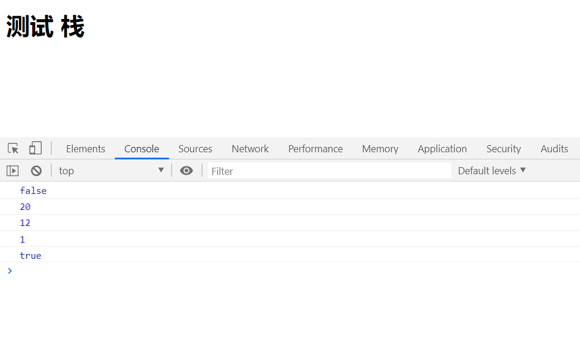

栈是一种遵从后进先出（LIFO）原则的有序集合。新添加或待删除的元素都保存在栈的同 一端，称作栈顶，另一端就叫栈底。在栈里，新元素都靠近栈顶，旧元素都接近栈底。
栈拥有以下方法：
push(element): 元素入栈， 添加一个或多个新元素到栈顶
pop(): 元素出栈，移除栈顶的元素，同时返回被移除的元素
peek(): 返回栈顶的元素，不对站内元素做任何修改
isEmpty(): 判断栈是否为空，如果栈内没有任何元素就返回true，否则返回false
clear(): 移除栈内的所有元素
size(): 返回栈里的元素个数，该方法和数组的length属性类似
说明：
数组的头部就是栈底，数组的尾部就是栈顶
因为是基于javascript的数组构建的栈，所以会用到各种数组方法，首先创建一个类表示类，这里用到了ES6的语法，接下来便开始逐个实现栈中的6个常规方法。
s1.声明栈构造函数
1 //在栈的构造函数中声明一个空数组用来保存栈内的元素
2 class Stack {
3 constructor() {
4 this.items = [];
5 }
6 }s2.实现push()方法，元素入栈
使用数组的push方法，将元素放入数组的末尾，也就是栈结构中的栈顶。
push(element){
this.items.push(element);
}
s3.实现pop()方法，元素出栈,并返回该元素
根据先进后出的原则，移除的元素是最后添加进栈的元素，这里使用数组的pop方法
pop() {
return this.items.pop();
}
s4.实现peek()方法，查看栈顶元素，也就是最后添加进栈的元素
在数组中表现为数组最后一个索引位置的元素，访问数组的最后一个元素可以用 length -1
peek() {
return this.items[this.items.length - 1];
}
s5.实现isEmpty()方法，查看栈是否为空
其实就是判断数组的长度是否为0
isEmpty() {
return this.items.length === 0;
}
s6.实现clear()方法，清空栈内所有元素
直接将数组重置为空即可
clear() {
return this.items = [];
}
s7.实现size()方法，返回栈的长度
在数组中的表现就是返回数组的length
size() {
return this.items.length;
}
至此，基于数组搭建的栈就完成了，接下来就开始测试一下！下面的代码直接复制就可以用了。
<!DOCTYPE html>
<html lang="en">
<head>
<meta charset="UTF-8">
<meta name="viewport" content="width=device-width, initial-scale=1.0">
<meta http-equiv="X-UA-Compatible" content="ie=edge">
<title>
</title>
</head>
<body>
<h1>测试 栈</h1>
<script>
//在栈的构造函数中声明一个空数组用来保存栈内的元素
class Stack {
constructor() {
this.items = [];
}
push(element){
this.items.push(element);
}
pop() {
return this.items.pop();
}
peek() {
return this.items[this.items.length - 1];
}
isEmpty() {
return this.items.length === 0;
}
clear() {
return this.items = [];
}
size() {
return this.items.length;
}
}
//首先实例化一个栈对象
const stack = new Stack();
stack.push(12); //进栈
stack.push(20);
console.log(stack.isEmpty()); //输出false
console.log(stack.pop()); //输出20，这里移除了栈顶元素20，并返回了
console.log(stack.peek()); //输出12，这是返回元素，12依然保存在栈中
console.log(stack.size()); //输出1
stack.clear(); //清栈，此时栈空了
console.log(stack.isEmpty()); //输出true
</script>
</body>
</html>

后面会再写一篇基于JavaScript对象搭建的栈结构实现。纯手打不易，转载请注明出处！
<html><html lang="en"><head> <meta charset="UTF-8"> <meta name="viewport" content="width=device-width, initial-scale=1.0"> <meta http-equiv="X-UA-Compatible" content="ie=edge"> <title> </title></head><body><h1>测试 栈</h1><script>//在栈的构造函数中声明一个空数组用来保存栈内的元素class Stack {constructor() {this.items = [];}push(element){this.items.push(element);}
pop() {return this.items.pop();}
peek() {return this.items[this.items.length - 1];}
isEmpty() {return this.items.length === 0;}
clear() {return this.items = [];}
size() {return this.items.length;}}//首先实例化一个栈对象const stack = new Stack();
stack.push(12);//进栈stack.push(20);console.log(stack.isEmpty());//输出falseconsole.log(stack.pop());//输出20，这里移除了栈顶元素20，并返回了console.log(stack.peek());//输出12，这是返回元素，12依然保存在栈中
console.log(stack.size());//输出1
stack.clear();//清栈，此时栈空了console.log(stack.isEmpty());//输出true</script></body></html>